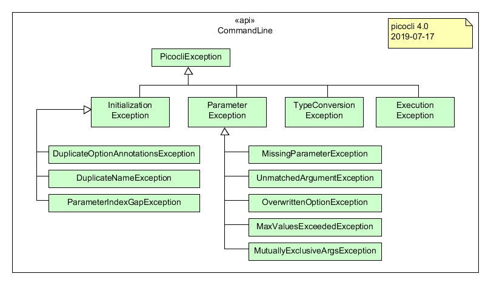
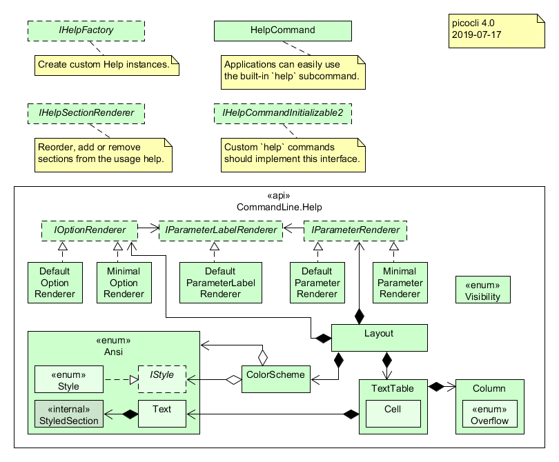

Module info.picocli
Package picocli
Provides classes and interfaces for the main picocli command line parsing and
autocompletion functionality.
The CommandLine class is a one-file framework for creating Java command line
applications with almost zero code.
CommandLine is in a single file, so it can be included in source form.
This lets users run picocli-based applications without requiring picocli as an external dependency.
Classes and Interfaces for Defining a CommandSpec Model

Classes Related to Parsing Command Line Arguments

Class Diagram of the Picocli Exceptions

Class Diagram of the CommandLine.Help API

-
Interface Summary Interface Description CommandLine.Help.Ansi.IStyle Defines the interface for an ANSI escape sequence.CommandLine.Help.IOptionRenderer When customizing online help forOptiondetails, a customIOptionRenderercan be used to create textual representation of an Option in a tabular format: one or more rows, each containing one or more columns.CommandLine.Help.IParameterRenderer When customizing online help for positional parameters details, a customIParameterRenderercan be used to create textual representation of a Parameters field in a tabular format: one or more rows, each containing one or more columns.CommandLine.Help.IParamLabelRenderer When customizing online usage help for an option parameter or a positional parameter, a customIParamLabelRenderercan be used to render the parameter name or label to a String.CommandLine.IDefaultValueProvider Provides default value for a command.CommandLine.IExceptionHandler Deprecated. CommandLine.IExceptionHandler2<R> Deprecated. CommandLine.IExecutionExceptionHandler Classes implementing this interface know how to handle Exceptions that occurred while executing theRunnable,CallableorMethoduser object of the command.CommandLine.IExecutionStrategy Implementations are responsible for "executing" the user input and returning an exit code.CommandLine.IExitCodeExceptionMapper Interface that provides the appropriate exit code that will be returned from theexecutemethod for an exception that occurred during parsing or while invoking the command's Runnable, Callable, or Method.CommandLine.IExitCodeGenerator @Command-annotated classes can implement this interface to specify an exit code that will be returned from theexecutemethod when the command is successfully invoked.CommandLine.IFactory Factory for instantiating classes that are registered declaratively with annotation attributes, likeCommandLine.Command.subcommands(),CommandLine.Option.converter(),CommandLine.Parameters.converter()andCommandLine.Command.versionProvider().CommandLine.IHelpCommandInitializable Deprecated. useCommandLine.IHelpCommandInitializable2insteadCommandLine.IHelpCommandInitializable2 Help commands that provide usage help for other commands can implement this interface to be initialized with the information they need.CommandLine.IHelpFactory Creates theCommandLine.Helpinstance used to render the usage help message.CommandLine.IHelpSectionRenderer Renders a section of the usage help message.CommandLine.IModelTransformer Provides a way to modify how the command model is built.CommandLine.INegatableOptionTransformer Determines the option name transformation of negatable boolean options.CommandLine.IParameterConsumer Options or positional parameters can be assigned aIParameterConsumerthat implements custom logic to process the parameters for this option or this position.CommandLine.IParameterExceptionHandler Classes implementing this interface know how to handleParameterExceptions(usually from invalid user input).CommandLine.IParameterPreprocessor Options, positional parameters and commands can be assigned aIParameterPreprocessorthat implements custom logic to preprocess the parameters for this option, position or command.CommandLine.IParseResultHandler Deprecated. UseCommandLine.IExecutionStrategyinstead.CommandLine.IParseResultHandler2<R> Deprecated. useCommandLine.IExecutionStrategyinstead, seeCommandLine.execute(String...)CommandLine.ITypeConverter<K> When parsing command line arguments and initializing fields annotated with@Optionor@Parameters, String values can be converted to any type for which aITypeConverteris registered.CommandLine.IVersionProvider Provides version information for a command.CommandLine.Model.IAnnotatedElement Internal interface to allow annotation processors to construct a command model at compile time.CommandLine.Model.IExtensible Interface to allow extending the capabilities of other interface without Java 8 default methods.CommandLine.Model.IGetter Customizable getter for obtaining the current value of an option or positional parameter.CommandLine.Model.IOrdered CommandLine.Model.IScope The scope of a getter/setter binding is the context where the current value should be gotten from or set to.CommandLine.Model.IScoped This interface provides access to anCommandLine.Model.IScopeinstance.CommandLine.Model.ISetter Customizable setter for modifying the value of an option or positional parameter.CommandLine.Model.ITypeInfo Encapculates type information for an option or parameter to make this information available both at runtime and at compile time (whenClassvalues are not available). -
Class Summary Class Description AutoComplete Stand-alone tool that generates bash auto-complete scripts for picocli-based command line applications.AutoComplete.GenerateCompletion Command that generates a Bash/ZSH completion script for its top-level command.CommandLine CommandLine interpreter that uses reflection to initialize an annotated user object with values obtained from the command line arguments.CommandLine.AbstractHandler<R,T extends CommandLine.AbstractHandler<R,T>> Deprecated. CommandLine.AbstractParseResultHandler<R> Deprecated. CommandLine.DefaultExceptionHandler<R> Deprecated. CommandLine.ExitCode Defines some exit codes used by picocli as default return values from theexecuteandexecuteHelpRequestmethods.CommandLine.Help A collection of methods and inner classes that provide fine-grained control over the contents and layout of the usage help message to display to end users when help is requested or invalid input values were specified.CommandLine.Help.ColorScheme All usage help message are generated with a color scheme that assigns certain styles and colors to common parts of a usage message: the command name, options, positional parameters and option parameters.CommandLine.Help.ColorScheme.Builder Builder class to createColorSchemeinstances.CommandLine.Help.Column CommandLine.Help.Layout Use a Layout to format usage help text for options and parameters in tabular format.CommandLine.Help.TextTable Responsible for spacing outCommandLine.Help.Ansi.Textvalues according to theCommandLine.Help.Columndefinitions the table was created with.CommandLine.Help.TextTable.Cell Helper class to index positions in aHelp.TextTable.CommandLine.HelpCommand Help command that can be installed as a subcommand on all application commands.CommandLine.Model This class provides a namespace for classes and interfaces that model concepts and attributes of command line interfaces in picocli.CommandLine.Model.ArgGroupSpec TheArgGroupSpecclass models agroupof arguments (options, positional parameters or a mixture of the two).CommandLine.Model.ArgGroupSpec.Builder Builder responsible for creating validArgGroupSpecobjects.CommandLine.Model.ArgSpec Models the shared attributes ofCommandLine.Model.OptionSpecandCommandLine.Model.PositionalParamSpec.CommandLine.Model.CommandSpec TheCommandSpecclass models a command specification, including the options, positional parameters and subcommands supported by the command, as well as attributes for the version help message and the usage help message of the command.CommandLine.Model.Messages Utility class for getting resource bundle strings.CommandLine.Model.MethodParam Command method parameter, similar to java.lang.reflect.Parameter (not available before Java 8).CommandLine.Model.OptionSpec TheOptionSpecclass models aspects of a named option of a command, including whether it is required or optional, the option parameters supported (or required) by the option, and attributes for the usage help message describing the option.CommandLine.Model.OptionSpec.Builder Builder responsible for creating validOptionSpecobjects.CommandLine.Model.ParserSpec Models parser configuration specification.CommandLine.Model.PositionalParamSpec ThePositionalParamSpecclass models aspects of a positional parameter of a command, including whether it is required or optional, and attributes for the usage help message describing the positional parameter.CommandLine.Model.PositionalParamSpec.Builder Builder responsible for creating validPositionalParamSpecobjects.CommandLine.Model.UnmatchedArgsBinding This class allows applications to specify a custom binding that will be invoked for unmatched arguments.CommandLine.Model.UsageMessageSpec Models the usage help message specification and can be used to customize the usage help message.CommandLine.ParseResult Encapsulates the result of parsing an array of command line arguments.CommandLine.ParseResult.Builder Builds immutableParseResultinstances.CommandLine.ParseResult.GroupMatch A group's multiplicity specifies how many matches of a group may appear on the command line.CommandLine.ParseResult.GroupMatchContainer Provides information about anCommandLine.ArgGroupthat was matched on the command line.CommandLine.PropertiesDefaultProvider IDefaultValueProviderimplementation that loads default values for command line options and positional parameters from a properties file orPropertiesobject.CommandLine.Range Describes the number of parameters required and accepted by an option or a positional parameter.CommandLine.RegexTransformer A regular expression-based option name transformation for negatable options.CommandLine.RegexTransformer.Builder Builder for creatingRegexTransformerobjects.CommandLine.RunAll Command line execution strategy that prints help if requested, and otherwise executes the top-level command and all subcommands asRunnable,CallableorMethod.CommandLine.RunFirst Command line execution strategy that prints help if requested, and otherwise executes the top-levelRunnableorCallablecommand.CommandLine.RunLast Command line execution strategy that prints help if requested, and otherwise executes the most specificRunnableorCallablesubcommand.CommandLine.Tracer Utility class for printing internal debug statements.CommandLine.UseDefaultConverter Converter that can be used to signal to picocli that it should use the default converter. -
Enum Summary Enum Description CommandLine.Help.Ansi Provides methods and inner classes to support using ANSI escape codes in usage help messages.CommandLine.Help.Ansi.Style A set of pre-defined ANSI escape code styles and colors, and a set of convenience methods for parsing text with embedded markup style names, as well as convenience methods for converting styles to strings with embedded escape codes.CommandLine.Help.Column.Overflow Policy for handling text that is longer than the column width: span multiple columns, wrap to the next row, or simply truncate the portion that doesn't fit.CommandLine.Help.Visibility Controls the visibility of certain aspects of the usage help message.CommandLine.ScopeType Specifies the scope of the element.CommandLine.Spec.Target Identifies what kind ofCommandSpecshould be injected.CommandLine.TraceLevel Enumerates over the trace level values for filtering which internal debug statements should be printed. -
Exception Summary Exception Description CommandLine.DuplicateNameException Exception indicating that multiple named elements have incorrectly used the same name.CommandLine.DuplicateOptionAnnotationsException Exception indicating that multiple fields have been annotated with the same Option name.CommandLine.ExecutionException Exception indicating a problem while invoking a command or subcommand.CommandLine.InitializationException Exception indicating a problem duringCommandLineinitialization.CommandLine.MaxValuesExceededException Exception indicating that more values were specified for an option or parameter than itsarityallows.CommandLine.MissingParameterException Exception indicating that a required parameter was not specified.CommandLine.MissingTypeConverterException Exception indicating that an annotated field had a type for which noCommandLine.ITypeConverterwas registered.CommandLine.MutuallyExclusiveArgsException Exception indicating that the user input included multiple arguments from a mutually exclusive group.CommandLine.OverwrittenOptionException Exception indicating that an option for a single-value option field has been specified multiple times on the command line.CommandLine.ParameterException Exception indicating something went wrong while parsing command line options.CommandLine.ParameterIndexGapException Exception indicating that there was a gap in the indices of the fields annotated withCommandLine.Parameters.CommandLine.PicocliException Base class of all exceptions thrown bypicocli.CommandLine.CommandLine.TypeConversionException Exception thrown byCommandLine.ITypeConverterimplementations to indicate a String could not be converted.CommandLine.UnmatchedArgumentException Exception indicating that a command line argument could not be mapped to any of the fields annotated withCommandLine.OptionorCommandLine.Parameters. -
Annotation Types Summary Annotation Type Description CommandLine.ArgGroup ACommandmay define one or moreArgGroups: a group of options, positional parameters or a mixture of the two.CommandLine.Command Annotate your class with@Commandwhen you want more control over the format of the generated help message.CommandLine.Mixin Fields annotated with@Mixinare "expanded" into the current command:@Optionand@Parametersin the mixin class are added to the options and positional parameters of this command.CommandLine.Option Annotate fields in your class with@Optionand picocli will initialize these fields when matching arguments are specified on the command line.CommandLine.Parameters Fields annotated with@Parameterswill be initialized with positional parameters.CommandLine.ParentCommand Fields annotated with@ParentCommandwill be initialized with the parent command of the current subcommand.CommandLine.Spec Fields annotated with@Specwill be initialized with theCommandSpecfor the command the field is part of.CommandLine.Unmatched Fields annotated with@Unmatchedwill be initialized with the list of unmatched command line arguments, if any.